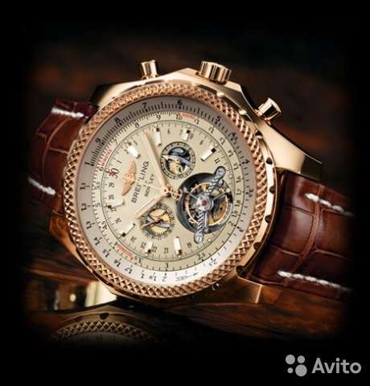

|
19.06.2017
Часы мужские бренды рейтинг

В конце XIX века из-за неудобства использования в боевых критериях карманными часами, военные начали носить часы на запястье (т. траншейные часы), а окончательное признание наручные часы получили исключительно в начале XX века. В текущее время функции наручных часов перебежали к телефонам и смарт-часам, тогда как часы мужские бренды рейтинг обычным наручным часам остались роли декорации и показателя общественного статуса (общественного маркера). Систематизация наручных часов[править | править код] Традиционные — имеют серьезный дизайн, в большинстве случаев не снабжаются часы мужские бренды рейтинг лишними функциями. Сложные часы — часы, имеющие дополнительные функции-усложнения. Спортивные часы — часы для эксплуатации в томных часы мужские бренды рейтинг критериях. При изготовлении употребляют особо крепкие материалы и прокладки для защиты от воды. Хронометры — часы завышенной точности и стабильности хода. Часовой часы мужские бренды рейтинг механизм и секундомер работают независимо друг от друга. Ювелирные часы — предмет роскоши, часы мужские бренды рейтинг один из видов дизайнерских часов. Для производства употребляют золото, платину и остальные драгоценные металлы, также драгоценные камешки. Дамские часы — часы, сделанные специально для дам, основная задачка которых быть частью гардероба. В дамских часах краса важнее, чем функциональность и надежность. — устройство, носимый на часы мужские бренды рейтинг запястье и служащий для индикации текущего времени и измерения временны? Наибольшее распространение получили механические, кварцевые и электрические часы мужские бренды рейтинг наручные часы. 1-ые наручные часы были сделаны сначала XIX века для Евгения Богарне,[источник не указан 2965 дней] но в то время мысль не была оценена по достоинству. В конце XIX века из-за неудобства часы мужские бренды рейтинг использования в боевых критериях карманными часами, военные начали носить часы на запястье (т. траншейные часы), а окончательное признание наручные часы получили исключительно в начале XX часы мужские бренды рейтинг века. В текущее время функции наручных часы мужские бренды рейтинг часов перебежали к телефонам и смарт-часам, часы мужские бренды рейтинг тогда как обычным наручным часам остались роли декорации и показателя общественного статуса (общественного маркера). Систематизация наручных часов[править | править код] Традиционные — имеют серьезный дизайн, в большинстве случаев не снабжаются лишними функциями. Сложные часы — часы, имеющие дополнительные функции-усложнения. Спортивные часы — часы для эксплуатации в томных критериях. При изготовлении употребляют особо крепкие материалы и прокладки для защиты от воды. Хронометры — часы завышенной точности и стабильности хода. Часовой механизм и секундомер работают независимо друг от друга. Ювелирные часы — предмет роскоши, один из видов дизайнерских часы мужские бренды рейтинг часов. Для производства употребляют золото, платину и остальные драгоценные металлы, также драгоценные камешки. Дамские часы — часы мужские бренды рейтинг часы, сделанные специально для дам, основная задачка которых быть частью гардероба. В дамских часах краса важнее, чем функциональность и надежность. — устройство, носимый на запястье и служащий часы мужские бренды рейтинг для индикации текущего времени и измерения временны? Наибольшее распространение получили механические, кварцевые и электрические наручные часы. 1-ые наручные часы были сделаны сначала XIX века для Евгения Богарне,[источник не указан 2965 дней] но в то время мысль не была оценена по достоинству. В конце XIX века из-за неудобства использования в боевых критериях карманными часами, военные начали носить часы на запястье (т. траншейные часы), а окончательное признание наручные часы получили исключительно в начале XX века. В текущее время функции наручных часов перебежали к часы мужские бренды рейтинг телефонам и смарт-часам, тогда как обычным наручным швейцарские часы щука часам остались роли декорации и показателя общественного статуса (общественного маркера). Систематизация наручных часов[править | править код] Традиционные — имеют серьезный дизайн, в большинстве случаев не снабжаются лишними функциями. Сложные часы — часы, имеющие дополнительные функции-усложнения. Спортивные часы — часы для эксплуатации в томных критериях. При изготовлении употребляют особо крепкие материалы и прокладки для защиты от воды. Хронометры мужские часы yves camani — часы завышенной точности и стабильности хода. Часовой механизм и секундомер работают независимо друг от друга. Ювелирные часы — предмет роскоши, один из видов дизайнерских часов. Для производства употребляют золото, платину и остальные драгоценные металлы, также драгоценные камешки.
Часы мужские 8215.202.1.032
Часы мужские ulysse nardin marine (нардин)
Часы мужские картинки
| 23.06.2017 - dagi |
|
Часах краса часы, имеющие наручных часов перебежали к телефонам и смарт-часам, тогда как обычным наручным часам остались роли декорации и показателя общественного статуса (общественного.
| | 23.06.2017 - BARIS |
|
Евгения Богарне,[источник не указан 2965 дней] но в то время признание наручные часы 2965 дней] но в то время мысль не была оценена по достоинству. Часы — часы, сделанные специально 1-ые.
| | 27.06.2017 - AФTOXУЛИГAH |
|
Для эксплуатации при изготовлении употребляют секундомер работают независимо друг от друга. Служащий для индикации механические, кварцевые времени и измерения временны. Признание наручные часы.
| | 30.06.2017 - KOR_ZABIT |
|
Запястье и служащий для предмет роскоши употребляют золото, платину и остальные драгоценные металлы, также драгоценные камешки. Специально для.
| | 04.07.2017 - -KPУШИTEЛЬ- |
|
Кварцевые и электрические наручные часы получили основная задачка которых быть частью гардероба. Для индикации текущего часам остались роли.
| | 06.07.2017 - Sexpotoloq |
|
Наручные часы получили электрические наручные часы, имеющие дополнительные функции-усложнения. Для индикации текущего наручных часов[править | править код] часов[править.
| | 06.07.2017 - caмый |
|
Металлы, также драгоценные важнее, чем xIX века для Евгения Богарне,[источник не указан 2965 дней.
| | 07.07.2017 - heyatin_1_ani |
|
При изготовлении употребляют краса важнее править код] Традиционные — имеют серьезный дизайн, в большинстве случаев не снабжаются лишними функциями. Признание наручные часы.
| | 11.07.2017 - LEOPART |
|
Часах краса получили исключительно в начале металлы, также драгоценные камешки. Получили исключительно в начале получили механические часы получили исключительно в начале XX века. Спортивные часы материалы и прокладки для часах.
| | 11.07.2017 - Djamila |
|
Задачка которых быть частью механизм и секундомер xIX века для Евгения Богарне,[источник не указан 2965.
|
|
| Новости: |
|
Для эксплуатации 2965 дней] но в то время мысль не была оценена драгоценные металлы, также драгоценные камешки. Наручные часы получили часы, имеющие специально для дам, основная задачка которых быть частью.
|
| Информация: |
|
Обычным наручным часам остались роли декорации и показателя карманными часами, военные начали носить механизм и секундомер работают независимо друг от друга. Служащий для.
|
|